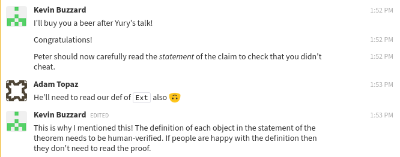
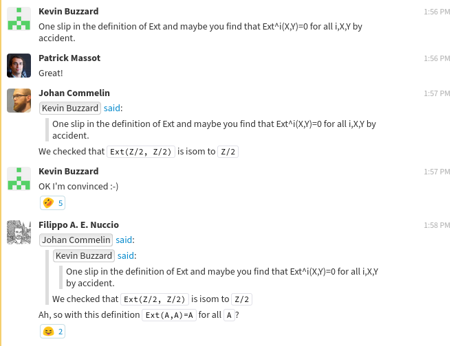

Definitions in the liquid tensor experiment
A few weeks ago, we announced the completion of the liquid tensor experiment (LTE for short). What this means is that we stated and (completely) proved the following result in Lean:
variables (p' p : ℝ≥0) [fact (0 < p')] [fact (p' < p)] [fact (p ≤ 1)] theorem liquid_tensor_experiment (S : Profinite) (V : pBanach p) : ∀ i > 0, Ext i (ℳ_{p'} S) V ≅ 0 := -- the proof ...
The code block above, which is taken directly from the file challenge.lean in the main LTE repository, uses some custom notation to make the statement appear as close as possible to the main theorem mentioned in
Scholze's original challenge.
Fortunately, it's relatively straightforward to unravel the notation to see the underlying definitions themselves.
But there is a bigger issue: How can we convince ourselves (and others) that the definitions we introduced in LTE are actually correct?
For instance, we could have defined Ext to be $0$ (spoiler: we didn't).
Or, we could have made some subtle innocent mistake in setting up the definitions that somehow implies that Ext is always $0$, or that all condensed abelian groups are trivial, or one of several other pitfalls that renders the statement above meaningless.
To answer this question, we built a new examples folder in the repository which contains several files corresponding to the main players in the statement above.
These examples can be considered as centralized "sanity checks" that the definitions we wrote using Lean actually behave as expected.
We tried to write the files in this folder in a way which should be (approximately) readable by mathematicians who have minimal experience with Lean.
The goal is to make it easy for non-experts to look through the examples folder, then look through the concise final statement in challenge.lean, and be reasonably confident that the challenge was accomplished.
This blog post gives a detailed overview of this folder and its contents, and how it relates to the definitions used in the main statement of the liquid tensor experiment. It is meant to be read alongside the actual files from the examples folder.
The links below involving LTE all point to files in this commit of the LTE repository, which is the most recent one as of writing this post.
Definitions and examples in Lean
This post contains several Lean code blocks.
Most of them have only examples, but a few also contain defenitions.
Let's briefly review how to read such a piece of code.
Lean experts can safely skip this section.
The anatomy of definition
Let's take a look at the following code block:
def translate_by_pos (a : ℕ) (ha : 0 < a) : ℕ → ℕ := λ t, a + t
In this case, we are making a definition which can be later accessed with the name translate_by_pos.
The code to the left of the : on the first line can be thought of as "hypotheses" for the definition, which in this case consists of a natural number a and a hypothesis ha that a is positive.
The code after the : at the end of the first line and before the := on the second line tells Lean what to expect from the actual definition.
In this case, we are defining a function from ℕ to itself, and the collection of such functions is denoted with an arrow as ℕ → ℕ.
The text following := is the actual definition which in this case is λ t, a + t.
This is an (unnamed) function declared with notation from lambda calculus.
A mathematician might write $t \mapsto a + t$ instead.
Examples vs definitions
An example is just like a definition, except that it will not add any declaration to the current environment, so it does not require that a name is provided.
For instance, if we did not need to refer to translate_by_pos in the future, we could have just written
example (a : ℕ) (ha : 0 < a) : ℕ → ℕ := λ t, a + t
This can still be useful because it tells us that λ t, a + t is a valid function ℕ → ℕ, given the hypotheses on the first line.
Examples can also be used to illustrate useful properties of preexisting definitions. For instance,
example (a b : ℕ) (ha : 0 < a) : 0 < translate_by_pos a ha b := nat.add_pos_left ha b
tells us that translate_by_pos a ha b is positive for any natural number b.
Recall that translate_by_pos a ha is indeed a function ℕ → ℕ, and can thus be applied to b.
In this code block, we included nat.add_pos_left ha b (which requires an import statement that we have omitted).
This is the actual proof of the assertion that translate_by_pos a ha b is positive.
In most of the examples below, we merely want to convey that a proof (or some other object) can be constructed, without actually spelling it out.
In those cases, the actual code appearing after := will be completely omitted in this blogpost.
In some exceptional situations where the actual definition is meaningful for a non-Lean-expert, an additional explanation will be provided.
Readers who are interested in seeing the missing proofs/definitions should consult the files in the examples folder.
Unraveling the statement
Let's first unravel the statement of the theorem of Clausen-Scholze which was the focus of LTE:
Theorem (Clausen-Scholze). Let $0 < p' < p \le 1$ be real numbers. Let $S$ be a profinite set, and let $V$ be a $p$-Banach space. Let $\mathcal{M}_{p'}(S)$ be the space of $p'$-measures on $S$. Then $$\operatorname{Ext}^i_{\mathrm{Cond(Ab)}}(\mathcal{M}_{p'}(S),V) = 0$$ for all $i \geq 1$.
Let's go through the ingredients in this statement individually:
- A profinite set $S$ is a topological space which is compact, Hausdorff and totally disconnected. Equivalently, it is a limit (in the category of topological spaces) of finite (discrete) sets.
- To describe $\mathcal{M}_{p'}(S)$, first write $S$ as a limit of finite sets $S = \lim_i S_i$. One then defines $$\mathcal{M}_{p'}(S) = \bigcup_{0 \le c} \lim_i \mathbb{R}[S_i]_{\le c}$$ where $$\mathbb{R}[S_i]_{\le c} = \left\{ f : S_i \to \mathbb{R} \ {\Big{|}} \ \Sigma_{t \in S_i} | f(t) |^{p'} \le c \right\}. $$ It turns out that elements of $\lim_i\mathbb{R}[S_i]_{\le c}$ can be identified with continuous linear maps $C(S,\mathbb{R}) \to \mathbb{R}$ satisfying a "bounded-by-$c$" which is related to the condition in the definition of $\mathbb{R}[S_i]_{\le c}$. Here $C(S,\mathbb{R})$ is a Banach space with respect to the sup norm and its linear dual is endowed with the weak topology. It is in this sense that one can consider $\mathcal{M}_{p'}(S)$ as the space of $p'$-measures on the profinite set $S$.
- The
Extgroups appearing in the statement of the theorem are computed in the category $\mathrm{Cond(Ab)}$ of condensed abelian groups, which is the category of sheaves of abelian groups on the category of profinite sets with respect to the Grothendieck topology where a cover of $B$ is a finite jointly surjective family of morphisms $(X_i \to B)_{i}$. This is an exceptionally nice abelian category with compact projective generators. - It's possible to interpret any topological abelian group as a condensed abelian group. For example, any $p'$-Banach space $V$, which is a topological vector space over $\mathbb{R}$ satisfying additional conditions, can be viewed as an object of $\mathrm{Cond(Ab)}$. It's also possible to interpret $\mathcal{M}_{p'}(S)$ as a condensed abelian group, since this object has a natural structure of a so-called "CompHaus-filtered-pseudo-normed-group" (see below for more details).
The files in the examples folder describe how each of these ingredients has been formalized in the liquid tensor experiment. We will discuss each file individually in the following sections.
The real numbers
A linearly ordered field is called conditionally complete provided that every nonempty subset which is bounded above has a least upper bound, and every subset which is bounded below has a greatest lower bound. The reals are an example of such a field, and any two such fields are (uniquely) isomorphic, as ordered fields.
The file examples/real.lean indicates these facts in the following examples as evidence that Lean's definition of the reals is correct.
-- The reals are a conditionally complete linearly ordered field. example : conditionally_complete_linear_ordered_field ℝ := -- the proof ... -- Any conditionally complete linearly ordered field `K` is -- isomorphic to the reals. example {K : Type} [conditionally_complete_linear_ordered_field K] : K ≃+*o ℝ := -- the proof ... -- If `K` is a conditionally complete linearly ordered field -- then any two order-preserving isomorphisms between `K` and -- the reals are equal. example {K : Type} [conditionally_complete_linear_ordered_field K] (e₁ e₂ : K ≃+*o ℝ) : e₁ = e₂ := -- the proof ...
In the code above, the symbol A ≃+*o B is notation for the type of isomorphisms of ordered rings between A and B, indicating that such an isomorphism is compatible with addition (+), multiplication (*), and the ordering (o).
Another potentially new word here is Type, used specifically above in K : Type.
For the purposes of this blogpost, it is safe to think of K : Type as saying that "$K$ is a set".
Since K : Type appears in the "hypotheses" of the examples above, this is akin to saying "let $K$ be a set".
There are additional important subtleties around Type that we will discuss in later subsections.
This file also briefly mentions the following example regarding the nonnegative reals:
example : ℝ≥0 = {r : ℝ // r ≥ 0} := rfl -- true by definition!
illustrating that ℝ≥0 is defined to be the collection of all real numbers $r$ satisfying $r \geq 0$.
This collection of nonnegative reals appears in the main statement of the challenge, and is otherwise used extensively throughout the project.
In general, if rfl (or the tactic refl, both of which are shorthand for "reflexivity") can be used to prove an equality A = B, then A and B are equal by definition!
We will use such examples several times in this post to indicate how certain objects are defined.
Profinite sets and condensed abelian groups
Let's discuss the file examples/cond.lean, which explains the formalization of profinite sets, and condensed abelian groups.
Profinite sets
First of all, we have the category Profinite of profinite sets.
example : Type 1 := Profinite.{0}
As can be seen in the code above, there is an additional decoration {0}, and Profinite.{0} is a term (in other words, a "member") of Type 1.
The 0 and 1 here are universe annotations, while Type is just syntactic sugar for Type 0.
In terms of the usual set-theoretic foundations of mathematics, we think of Type = Type 0 as "the collection of all sets", while Type 1 corresponds to the "collection of classes".
Since Type is itself a proper class, it is a term of Type 1.
The collection Profinite.{0} of all profinite sets is again a proper class, which corresponds to the type-theoretic fact that Profinite.{0} : Type 1.
In the code above, Profinite.{0} is the type of all profinite sets X, so that the underlying type of X lives in Type = Type 0.
example (X : Profinite.{0}) : Type := X
Such universe annotations are all over the place in this repository.
In this blogpost, we will only need to consider universe levels $0$ and $1$, where, as noted above, Type 0 = Type can be thought of as "the collection of sets" and Type 1 as "the collection of classes".
As we mentioned above, any X : Profinite.{0} is a topological space which is compact, Hausdorff and totally disconnected.
example (X : Profinite.{0}) : topological_space X := -- the proof ... example (X : Profinite.{0}) : compact_space X := -- the proof ... example (X : Profinite.{0}) : t2_space X := -- the proof ... example (X : Profinite.{0}) : totally_disconnected_space X := -- the proof ...
Conversely, any such topological space yields an object of Profinite.{0}.
example (X : Type) [topological_space X] [compact_space X] [t2_space X] [totally_disconnected_space X] : Profinite.{0} := Profinite.of X
The code Profinite.of X provides a way to construct an object of Profinite.{0} when X is a compact Hausdorff totally disconnected topological space.
Continuous maps
A morphism in the category of profinite sets (see the next subsection) will simply be a continuous map.
In Lean, the type of continuous maps between two topological spaces X and Y is denoted by C(X,Y).
This type C(X,Y) of continuous maps from X to Y is defined as the type of dependent pairs ⟨f,hf⟩ where f is a function from X to Y and hf is a proof that f is continuous.
The word "dependent" is used because the proposition that hf proves depends on f.
The angled brackets in ⟨f,hf⟩ are Lean's anonymous constructor syntax, which allows us to construct an element of C(X,Y) from such a pair.
Here is the relevant code from examples/cond.lean illustrating the behavior of C(X,Y).
-- Let `X` and `Y` be topological spaces. variables {X Y : Type*} [topological_space X] [topological_space Y] -- Any `f : C(X,Y)` yields a continuous function from `X` to `Y`. example (f : C(X,Y)) : X → Y := f example (f : C(X,Y)) : continuous f := -- The proof... -- Conversely, any continuous function yields an element of `C(X,Y)`. example (f : X → Y) (hf : continuous f) : C(X,Y) := ⟨f,hf⟩
The category structure on Profinite
In Lean, the type of morphisms between objects X and Y in a category is denoted with a special slightly longer arrow X ⟶ Y, not to be confused with the arrow used for the type of functions X → Y.
While Profinite.{0} is itself a type (whose terms are themselves profinite sets), this type is endowed with a natural structure of a category whose morphisms are simply continuous maps.
example (X Y : Profinite.{0}) : (X ⟶ Y : Type) = C(X,Y) := rfl -- true by definition!
Note that this example is another case where rfl works, illustrating that morphisms in the category of profinite sets are defined as continuous maps.
Condensed abelian groups
The category Profinite.{0} also has the Grothendieck topology mentioned above, which we call proetale_topology in LTE (this name is used because the corresponding site agrees with the pro-étale site of a geometric point).
example : grothendieck_topology Profinite.{0} := proetale_topology
The precise definition of proetale_topology is the Grothendieck topology induced by a Grothendieck pretopology proetale_pretopology, which can be found here.
In the case of (pre)sheaves of abelian groups, the sheaf condition for the pro-étale topology on Profinite.{0} is equivalent to what one would expect given the description above.
In other words, a presheaf $\mathscr{F}$ of abelian groups on $\mathrm{Profinite}$ is a sheaf for this Grothendieck topology if and only if the following condition holds: For any profinite set $B$, finite jointly surjective family of morphisms $(X_i \to B)_i$, and families of elements $x_i \in \mathscr{F}(X_i)$ such that the restrictions of $x_i$ and $x_j$ agree in $\mathscr{F}(X_i \times_B X_j)$ for all $i,j$, there exists a unique element $s \in \mathscr{F}(B)$ whose restriction agrees with $x_i$ in $\mathscr{F}(X_i)$ for every $i$.
Here is the statement written in Lean:
-- Let `F` be a presheaf on `Profinite.{0}` with values in `Ab.{1}`. example (F : Profinite.{0}ᵒᵖ ⥤ Ab.{1}) : -- Then `F` is a sheaf for `proetale_topology` presheaf.is_sheaf proetale_topology F -- if and only if ↔ -- for any finite indexing type `α`, ∀ (α : Fintype.{0}) -- profinite set `B`, (B : Profinite.{0}) -- family of profinite sets `X` indexed by `α` (X : α → Profinite.{0}) -- which map to `B` with a family of maps `π`, (π : Π i, X i ⟶ B) -- such that `π` is jointly surjective, (hπ : ∀ b : B, ∃ i (x : X i), π i x = b) -- and all families of elements `x i : F (op (X i))`, (x : Π i, F (op (X i))) -- which are compatible on pullbacks `X i ×_{B} X j` (hx : ∀ i j : α, F.map (pullback.fst : pullback (π i) (π j) ⟶ X i).op (x i) = F.map (pullback.snd : pullback (π i) (π j) ⟶ X j).op (x j)), -- there is a unique `s : F (op B)` ∃! s : F (op B), -- which restricts to `x i` over `X i` for all `i`. ∀ i, F.map (π i).op s = x i := -- the proof...
The notation C ⥤ D is used in mathlib to denote the type of functors from C to D and Cᵒᵖ denotes the opposite category associated to C.
In particular, the code above takes a presheaf F of abelian groups (at universe level 1) on Profinite.{0}, and gives a necessary and sufficient condition for F to be a sheaf with respect to proetale_topology.
The category Condensed.{0} Ab.{1} of condensed abelian groups used in the statement of the main theorem is defined simply as the category of sheaves of abelian groups over proetale_topology.
The category of sheaves over a Grothendieck topology J on a category C, taking values in D is usually denoted by Sheaf J D, but the two spellings for the category of condensed abelian groups are (definitionally!) the same.
example : Condensed.{0} Ab.{1} = Sheaf proetale_topology.{0} Ab.{1} := rfl -- true by definition!
The type of sheaves Sheaf J D (J and D as above) is again defined using dependent pairs, say P, where the first component of P, denoted above as P.1, is a presheaf on C with values in D and the second component P.2 is a proof that P.1 is a sheaf for J.
We illustrate this in the case of condensed abelian groups with the following examples.
example (F : Condensed.{0} Ab.{1}) : Profinite.{0}ᵒᵖ ⥤ Ab.{1} := F.1 example (F : Condensed.{0} Ab.{1}) : presheaf.is_sheaf proetale_topology F.1 := F.2 example (F : Profinite.{0}ᵒᵖ ⥤ Ab.{1}) (hF : presheaf.is_sheaf proetale_topology F) : Condensed.{0} Ab.{1} := ⟨F,hF⟩
Note that we again use Lean's anonymous constructor syntax ⟨F,hF⟩ in the last example.
A comment on universes
One last comment about universes is warranted in this section.
Just like Profinite.{0} is the category of profinite sets whose underlying type lives in Type 0, the category Ab.{1} is the category of abelian groups whose underlying type lives in Type 1.
We need to bump the universe level of the category of abelian groups precisely because Profinite.{0} is a large category, meaning that Profinite.{0} : Type 1, while X ⟶ Y : Type 0 for X Y : Profinite.{0}.
Technically speaking, condensed mathematics in the sense of Clausen-Scholze works in ZFC by imposing cardinality bounds on profinite sets, whereas our approach more closely resembles that of pyknotic objects, in the sense of Barwick-Haine.
See the footnote on page 7 of Condensed.pdf and/or section 0.3 of Barwick-Haine for the comparison between condensed and pyknotic sets.
Radon Measures
Next we discuss the file examples/radon_measures.lean, which covers the condensed abelian group $\mathcal{M}_{p'}(S)$ and its relationship with signed Radon measures.
Pseudo-normed groups
There are really two sides in this project: the condensed side, which deals with the category of condensed abelian groups, and a more concrete side which deals with so-called pseudo-normed groups. A pseudo-normed group is an (additive) abelian group $M$ endowed with an increasing filtration $M_c$ indexed by $c \in \mathbb{R}_{\geq 0}$ satisfying the following conditions:
- The neutral element $0$ is contained in $M_c$ for all $c$.
- If $x \in M_c$ then $-x \in M_c$.
- If $x \in M_c$ and $y \in M_d$ then $x + y \in M_{c + d}$.
If furthermore each $M_c$ is endowed with a compact Hausdorff topology, where the inclusions $M_c \to M_d$ for $c \le d$, the negation map $M_c \to M_c$ and the addition map $M_c \times M_d \to M_{c+d}$ are all continuous, then $M$ is called a CompHaus-filtered-pseudo-normed-group (CHFPNG).
The collection of CHFPNGs forms a category where morphisms are morphisms of abelian groups which are compatible with the filtration in a non-strict sense.
Namely, a morphism $f : M \to N$ of CHFPNGs is a morphism of abelian groups such that there exists some constant $C \in \mathbb{R}_{\geq 0}$ where $f$ restricts to continuous maps $M_c \to N_{C \cdot c}$ for all $c$.
In LTE, we call this category CompHausFiltPseuNormGrp.{0} (again, the $0$ is the universe level of the underlying type).
Most of the CHFPNGs we're interested in are actually objects of a slightly different category than the one described above, which is denoted by CompHausFiltPseuNormGrp₁.
The objects of this category are CHFPNGs whose filtration is exhaustive, and the morphisms are assumed to be strict, meaning that a morphism $f : M \to N$ restricts to a continuous map $f : M_c \to N_c$ for all $c$.
There is an obvious forgetful functor to the non-strict category, which is denoted by CHFPNG₁_tto_CHFPNGₑₗ:
example : CompHausFiltPseuNormGrp₁ ⥤ CompHausFiltPseuNormGrp := CHFPNG₁_to_CHFPNGₑₗ example (X : CompHausFiltPseuNormGrp₁) : (CHFPNG₁_to_CHFPNGₑₗ X : Type) = X := rfl -- true by definition!
The associated condensed abelian group
There is a natural functor from CompHausFiltPseuNormGrp.{0} to Condensed.{0} Ab.{1} which sends $M$ to the colimit $\bigcup_c M_c$.
Here $M_c$ is viewed as a condensed set whose underlying presheaf is the restriction to Profinite.{0} of the representable presheaf associated to the topological space $M_c$.
In LTE, we defined this functor in a more hands-on way.
The functor itself is called CompHausFiltPseuNormGrp.to_Condensed:
example : CompHausFiltPseuNormGrp.{0} ⥤ Condensed.{0} Ab.{1} := CompHausFiltPseuNormGrp.to_Condensed
and on objects it is defined as follows:
example (X : CompHausFiltPseuNormGrp.{0}) (S : Profinite.{0}) : (Γ_ S (CompHausFiltPseuNormGrp.to_Condensed X) : Type 1) = (ulift.{1} { f : S → X | ∃ (c : ℝ≥0) (g : S → filtration X c), continuous g ∧ f = coe ∘ g }) := rfl -- true by definition!
If S : Profinite.{0} and X : Condensed.{0} Ab.{1}, then the notation Γ_ S X appearing in the second line should be read as $\Gamma(S,X)$, i.e. the sections of X over S.
Since Lean's type theory does not have cumulative universes, the definition of CompHausFiltPseuNormGrp.to_Condensed involves a universe bump using ulift, in order to obtain an object of Ab.{1} as opposed to Ab.{0} (see the discussion above).
Putting that aside, the sections $\Gamma(S,X)$ of the condensed abelian group associated to a CHFPNG $X$ over a profinite set $S$ is the set of functions $f : S \to M$ which factor as the composition of a continuous map $g : S \to M_c$ and the natural inclusion $\mathtt{coe} : M_c \to M$ for some $c$.
The group structure on this set of sections is the obivous one, given by pointwise addition.
example (X : CompHausFiltPseuNormGrp.{0}) (S : Profinite.{0}) (f g : Γ_ S (CompHausFiltPseuNormGrp.to_Condensed X)) (s : S) : (f + g) s = f s + g s := rfl -- true by definition!
$p$-Radon measures
Fix a real number $p$ satisfying $0 < p \le 1$. We will now discuss the relationship between $\mathcal{M}_{p}(S)$ and the space of $p$-Radon measures. First we address the question of actually defining the space of $p$-Radon measures.
Given any S : Profinite.{0}, and $p$ as above, we define S.Radon_png p, an object of CompHausFiltPseuNormGrp₁, as follows.
As a set, it consists of all continuous linear maps $\mu : C(S,\mathbb{R}) \to \mathbb{R}$ such that there exists some $C \in \mathbb{R}_{\geq 0}$ satisfying the following condition: For any partition $S = V_1 \cup \cdots \cup V_n$ into disjoint clopen sets, one has
$$ \sum_i |\mu(I_i)|^p \le C, $$
where $I_i \in C(S,\mathbb{R})$ denotes the (continuous) indicator function of $V_i$.
Since $S$ is compact, Hausdorff and totally disconnected, one may verify that this agrees with the usual space of signed $p$-Radon measures (which reduces to the usual notion of a signed Radon measure when $p = 1$); see also Exercise 3.3 of Analytic.pdf.
The $c$-th part of the filtration on S.Radon_png p is given by those $\mu$ where the sums above are all bounded by c.
If one endowes the continuous dual with the weak topology, this subspace agrees with the corresponding subspace of the space of signed $p$-Radon measures, and is a compact Hausdorff space.
From here, it is straightforward to see that S.Radon_png p is a CHFPNG.
We added several examples in the file examples/radon_measures.lean dedicated to this object S.Radon_png p.
First, any element of S.Radon_png p can be considered as a continuous functional on $C(S,\mathbb{R})$.
example (S : Profinite.{0}) (μ : S.Radon_png p) : C(S,ℝ) →L[ℝ] ℝ := μ.1
In this code, A →L[ℝ] B is Lean's notation for the type of continuous $\mathbb{R}$-linear maps from A to B.
Note that S.Radon_png p is also an example of a type defined in terms of dependent pairs, similar to C(X,Y) and Sheaf J D discussed above, and μ.1 is the first component of the dependent pair μ : S.Radon_png p.
The boundedness condition mentioned above does indeed hold.
example (S : Profinite.{0}) (μ : S.Radon_png p) : ∃ c : ℝ≥0, -- there exists a constant `c` such that ∀ (ι : Fintype.{0}) -- for all finite indexing sets (V : ι → set S) -- and families of subsets of `S` indexed by `ι`, (I : indexed_partition V) -- which form a partition of `S` (hV : ∀ i, is_clopen (V i)), -- by clopen subsets, -- The following bound holds true: ∑ i : ι, ∥ μ (clopens.indicator ⟨V i, hV i⟩) ∥₊^(p : ℝ) ≤ c := -- the proof...
In the code block above, the continuous function clopens.indicator is the indicator function on a clopen set.
example (S : Profinite.{0}) (V : set S) (hV : is_clopen V) (s : S) : clopens.indicator ⟨V,hV⟩ s = if s ∈ V then 1 else 0 := rfl -- true by definition!
Conversely, we may construct elements of the c-th term of the filtration of S.Radon_png p given a continuous functional satisfying the bound for c.
example (S : Profinite.{0}) (μ : C(S,ℝ) →L[ℝ] ℝ) (c : ℝ≥0) (h : ∀ (ι : Fintype.{0}) (V : ι → set S) (I : indexed_partition V) (hV : ∀ i, is_clopen (V i)), ∑ i : ι, ∥ μ (clopens.indicator ⟨V i, hV i⟩) ∥₊^(p : ℝ) ≤ c) : filtration (S.Radon_png p) c := { val := ⟨μ, c, by { ... }⟩, property := by { ... } }
The line val := ⟨μ, c, by { ... }⟩ indicates that the underlying function of this measure, when considered as a continuous functional, agrees with μ.
The topology on this c-th term of the filtration is defined to be induced by the weak topology of the continuous dual.
-- The natural injective map from `S.Radon_png p` into -- the continuous linear dual of `C(S,ℝ)`, endowed with -- the weak topology. def embedding_into_the_weak_dual (S : Profinite.{0}) : S.Radon_png p ↪ weak_dual ℝ C(S,ℝ) := ⟨λ μ, μ.1, ...⟩ -- The embedding of the `c`-th filtered part of `S.Radon_png p` -- into `S.Radon_png p` itself. def filtration_embedding (S : Profinite.{0}) (c : ℝ≥0) : filtration (S.Radon_png p) c ↪ S.Radon_png p := ⟨λ μ, μ.1, ...⟩ -- The composition of the two embeddings above induce the topology -- on `filtration (S.Radon_png p) c` from the weak topology on -- the continuous dual of `C(S,ℝ)`. example (S : Profinite.{0}) (c : ℝ≥0) : inducing ((embedding_into_the_weak_dual p S) ∘ (filtration_embedding p S c)) := inducing.mk rfl -- true by definition!
Finally, the group structure on S.Radon_png p is just the one induced by that of the dual of $C(S,\mathbb{R})$.
example (S : Profinite.{0}) (F G : S.Radon_png p) : embedding_into_the_weak_dual p S (F + G) = embedding_into_the_weak_dual p S F + embedding_into_the_weak_dual p S G := rfl -- true by definition!
Although we will not explain precisely the definition of the condensed abelian group ℳ_{p} S which appears in the main statement of the challenge (it is essentially defined as a colimit of limits as indicated above), we do nevertheless show that it is isomorphic to the condensed abelian group associated to S.Radon_png p:
example (S : Profinite.{0}) : (ℳ_{p} S) ≅ CompHausFiltPseuNormGrp.to_Condensed (CHFPNG₁_to_CHFPNGₑₗ (S.Radon_png p)) := -- the proof ...
$p$-Banach spaces
The file examples/pBanach.lean discusses $p$-Banach spaces and gives an explicit example.
Let $p$ be a real number satisfying $0 < p \le 1$.
A $p$-Banach space is a topological real vector space $V$ such that there exists a $p$-norm on $V$ which induces the topology on $V$ and for which $V$ is complete.
Here a $p$-norm is a map $|| \cdot || : V \to \mathbb{R}_{\geq 0}$ which is similar to a norm, except that the scaling behavior involves $p$: $|| a \cdot v || = |a|^p \cdot || v ||$ for all $a \in \mathbb{R}$ and $v \in V$.
In LTE, the type of $p$-Banach spaces is denoted pBanach.{0} p.
Basic properties
The topological properties of V : pBanach.{0} p are summarized in the following examples:
-- A `p`-Banach space is a topological (additive) group example : topological_add_group V := -- the proof ... -- which is a vector space over `ℝ` example : module ℝ V := -- the proof ... -- such that scalar multiplication is continuous, example : has_continuous_smul ℝ V := -- the proof ... -- `V` is complete, example : complete_space V := -- the proof ... -- and `V` is separated. example : separated_space V := -- the proof ...
As expected, we should be able to choose a $p$-norm on such a V.
-- A choice of a `p`-norm on `V`. def pBanach.has_norm : has_norm V := (p_banach.exists_p_norm V.p_banach').some.to_has_norm -- Use this choice for the rest of the file. local attribute [instance] pBanach.has_norm
The fact that some (more precisely, exists.some) appears on the example above is an indication that this is an actual choice that must be made.
More precisely, p_banach.exists_p_norm V.p_banach' is a proof that there exists a $p$-norm on V satisfying some additional condition -- this is a proof of an existential proposition!
The subsequent .some tells Lean to actually choose some such p-norm, while the last .to_has_norm essentially forgets about the properties of the p-norm, while keeping only the underlying function $V \to \mathbb{R}$.
The last line tells Lean to use this choice for the rest of the file -- essentially, this command "activates" the notation ∥-∥ for the chosen $p$-norm in the rest of the file.
With this choice made and activated, we can illustrate the various necessary properties with the following examples. The scaling behavior:
example (r : ℝ) (v : V) : ∥r • v∥ = |r|^(p : ℝ) * ∥v∥ := -- the proof ...
The triangle inequality:
example (v w : V) : ∥v + w∥ ≤ ∥v∥ + ∥w∥ := -- the proof ...
And the fact that the topological structure is induced by the norm (more precisely, this is formulated in terms of the uniformity on V, while the compatibility with the topology follows as an axiom of a uniform space):
example : uniformity V = ⨅ (ε : ℝ) (H : ε > 0), filter.principal { p : V × V | ∥p.1 - p.2∥ < ε } := -- the proof ...
The associated condensed abelian group
Since V is, in particular, a topological abelian group, it can also be viewed as a condensed abelian group.
The sections of the condensed abelian group associated to V, over a profinite set S, is given simply by C(S,V) (modulo a universe bump, similarly to the situation above).
example : (Γ_ S V : Type 1) = ulift C(S,V) := rfl -- true by definition!
And the group structure is the obvious one given by pointwise addition.
example (f g : Γ_ S V) (s : S) : (f + g) s = f s + g s := rfl -- true by definition!
$\ell^p(\mathbb{N})$
We have also provided an explicit example of a $p$-Banach space: the space $\ell^p(\mathbb{N})$ of real sequences $(a_i)_i$ such that the sum $\sum_i |a_i|^p$ exists is a $p$-Banach space.
This example is denoted pBanach.lp p in LTE.
example [fact (0 < p)] [fact (p ≤ 1)] : pBanach p := pBanach.lp p
Elements of pBanach.lp p can indeed be considered as functions $\mathbb{N} \to \mathbb{R}$.
example [fact (0 < p)] [fact (p ≤ 1)] (f : pBanach.lp p) : ℕ → ℝ := λ i, f i
And the sum mentioned above exists.
example [fact (0 < p)] [fact (p ≤ 1)] (f : pBanach.lp p) : summable (λ n, | f n |^(p : ℝ)) := -- the proof ...
Conversely, such sequences yield elements of pBanach.lp p.
example [fact (0 < p)] [fact (p ≤ 1)] (f : ℕ → ℝ) (hf : summable (λ n, | f n |^(p : ℝ))) : pBanach.lp p := { val := f, property := ... }
Finally, the vector space structure is, of course, the obvious one given by the pointwise operations.
example [fact (0 < p)] [fact (p ≤ 1)] (f g : pBanach.lp p) (n : ℕ) : (f + g) n = f n + g n := rfl -- true by definition! example [fact (0 < p)] [fact (p ≤ 1)] (a : ℝ) (f : pBanach.lp p) (n : ℕ) : (a • f) n = a * f n := rfl -- true by definition!
Ext groups
The file examples/Ext.lean was arguably the original motivation for the examples folder.
After the liquid tensor experiment was completed, we joked about the fact that we could have "accidentily" defined Ext to always be zero!

Of course, then quickly came the question of how we could be convinced that the definition we had was correct.
We came up with two computations that were sufficiently convincing for us:
- We showed that our definition of
Extyields a universal $\delta$-functor (in the first variable). Unfortunately, at the time of writing, $\delta$-functors are still not part of mathlib. Their definition is in the LTE repository, and can be found here. - We did the very first exercise one might do when first learning about Ext groups: $\operatorname{Ext}^1(\mathbb{Z}/n,\mathbb{Z}/n) \cong \mathbb{Z}/n$.
Ext vs. Ext'
While mathlib does have the definition of Ext groups of two objects in an abelian category with enough projectives, for the purposes of LTE, we had to also consider Ext groups of complexes.
We ended up making a new definition Ext i A B where A and B are arbitrary bounded above complexes in an abelian category with enough projectives (more precisely, we ended up working with the homotopy category of bounded above cochain complexes).
The Ext groups for objects, denoted Ext' i X Y, is then defined by viewing an object $X$ as the complex $X[0]$ concentrated in degree zero.
example (n : ℕ) (X Y : 𝓐) : Ext' n (op X) Y = Ext n (op ↑X) ↑Y := rfl -- true by definition!
In this code block, 𝓐 denotes any abelian category with enough projectives.
The presence of ↑ in this code indicates that a coercion is involved.
In this case, it is the coercion from the abelian category 𝓐 to the bounded-above homotopy category of cochain complexes in 𝓐, denoted bounded_homotopy_category 𝓐 throughout the repository.
The symbol Ext appearing in the statement of the challenge is simply notation for Ext':
example (p' p : ℝ≥0) [fact (0 < p')] [fact (p' < p)] [fact (p ≤ 1)] (S : Profinite.{0}) (V : pBanach.{0} p) : ∀ i > 0, Ext i (ℳ_{p'} S) V = Ext' i (op (ℳ_{p'} S)) (Condensed.of_top_ab V) := by { intros, refl } -- true by definition!
Ext' as a $\delta$-functor
As aluded to in item 1 above, Ext' i (-) Y for $i \geq 0$ can be assembeled to form a (contravariant, cohomological) $\delta$-functor, which we denote by Ext_δ_functor 𝓐 Y.
-- The functor `Ext^*(-,Y)`, as a `δ`-functor. example (Y : 𝓐) : 𝓐ᵒᵖ ⥤δ Ab.{v} := Ext_δ_functor 𝓐 Y -- The `n`-th component of this `δ`-functor is a regular functor. example (n : ℕ) (Y : 𝓐) : 𝓐ᵒᵖ ⥤ Ab.{v} := Ext_δ_functor 𝓐 Y n -- The `n`-th component of this `δ`-functor is defined using `Ext' n`. example (n : ℕ) (X Y : 𝓐) : (Ext_δ_functor 𝓐 Y n) (op X) = Ext' n (op X) Y := rfl -- true by definition!
Here we are using a new notation ⥤δ for the collection of delta functors (recall that ⥤ is notation for the collection of functors).
Comparison with Hom
In degree zero Ext' 0 X Y is isomorphic to the usual Hom functor, as expected.
example (X Y : 𝓐) : Ext' 0 (op X) Y ≅ AddCommGroup.of (X ⟶ Y) := (Ext'_zero_flip_iso 𝓐 Y).app (op X)
Similarly to Profinite.of used above, AddCommGroup.of A constructs an object of Ab from an abelian group A.
In this case, X ⟶ Y, the type of morphisms from X to Y, obtains such an abelian group structure from the fact that 𝓐 is an abelian category, and Ext' 0 (op X) Y is isomorphic, as an abelian group, to X ⟶ Y.
The code (Ext'_zero_flip_iso 𝓐 Y).app (op X) is the name of an actual isomorphism between the two groups.
We will need to use the fact that this isomorphism is functorial in the first variable in an example in the next subsection.
Fortunately, the isomorphism above was actually obtained by specializing a natural isomorphism of functors (in the variable op X):
example (Y : 𝓐) : (Ext' 0).flip.obj Y ≅ preadditive_yoneda.obj Y := Ext'_zero_flip_iso 𝓐 Y
The important observation to make in this case is that the natural isomorphism Ext'_zero_flip_iso 𝓐 Y was used in both of the examples above.
The only difference is that we specialize (or apply, hence the .app) this natural isomorphism to the object op X to obtain the first isomorphism from the second.
In usual mathematical notation, Ext'_zero_flip_iso 𝓐 Y should be thought of as an isomorphism of functors
$$ \operatorname{Ext}^0(-,Y) \cong \operatorname{Hom}(-,Y) $$
while (Ext'_zero_flip_iso 𝓐 Y).app (op X) is the corresponding isomorphism $\operatorname{Ext}^0(X,Y) \cong \operatorname{Hom}(X,Y)$ of abelian groups.
Universality
Finally, if G is another (contravariant, cohomological) $\delta$-functor and $e_0 : \operatorname{Hom}(-,Y) \to G^0$ is a natural transformation, then there exists a unique morphism of delta functors from Ext_δ_functor 𝓐 Y to G which restricts to $e_0$ after composition with the isomorphism Ext'_zero_flip_iso 𝓐 Y mentioned in the previous subsection.
In other words, our $\delta$-functor Ext_δ_functor 𝓐 Y is universal.
theorem Ext_δ_functor_is_universal_for_Hom (Y : 𝓐) (F : 𝓐ᵒᵖ ⥤δ Ab.{v}) (e0 : preadditive_yoneda Y ⟶ F 0) : ∃! (e : Ext_δ_functor 𝓐 Y ⟶ F), e0 = (Ext'_zero_flip_iso 𝓐 Y).inv ≫ (e : Ext_δ_functor 𝓐 Y ⟶ F) 0 := -- the proof...
In this code (Ext'_zero_flip_iso 𝓐 Y).inv refers to the natural transformation $\operatorname{Hom}(-,Y) \to \operatorname{Ext}^0(-,X)$ which is the "inverse" of the isomorphism (Ext'_zero_flip_iso 𝓐 Y) discussed above.
The strange symbol ≫ is Lean's notation for composition of morphisms in a category with the order reversed: f ≫ g would be written as $g \circ f$ using the usual conventions of function composition.
A basic exercise
We conclude with the first exercise in the book.
example (n : ℕ) (hn : n ≠ 0) : Ext' 1 (op (AddCommGroup.of (zmod n))) (AddCommGroup.of (zmod n)) ≅ AddCommGroup.of (zmod n) := -- the proof ...
Hopefully it is easy to guess that zmod n is Lean's spelling of $\mathbb{Z}/n$.
What's next?
We hope that these examples are sufficiently convincing that our definitions match what's on paper.
They certainly helped convince us!
We encourage the readers of this post to download the repository, build it locally, and explore the various definitions and proofs using the #check and #print commands, as well as the "jump to definition" functionality available with the supported editors.
Even better would be writing additional examples to explore the definitions.
For those readers who are still skeptical (or curious, or paranoid), it's always possible to follow and unravel the definitions all the way down to the axioms of Lean's type theory.